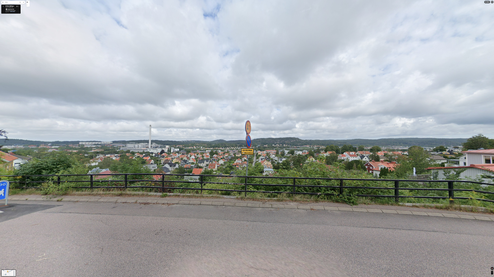
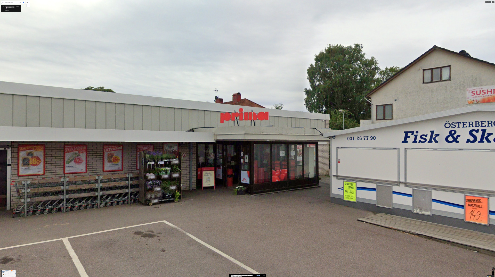

Dolda pärlor i Sävedalen




ICA
ICA Supermarket Prima på Skolvägen 7 i Sävedalen är en välsorterad butik med färskvaror, delikatesser, färdigmat och ekologiska produkter. Här finns även städartiklar, husdjursmat och internationella varor. Öppet alla dagar från kl. 07:00 (08:00 på helger) till 22:00.
Bäckemossen
Bäckemossen är en grön oas i Sävedalen med skog, stigar och en damm – perfekt för promenader, naturupplevelser och lugn året om.
Hus
Ett helt slumpmässigt valt hus som INTE har något att göra med mig.